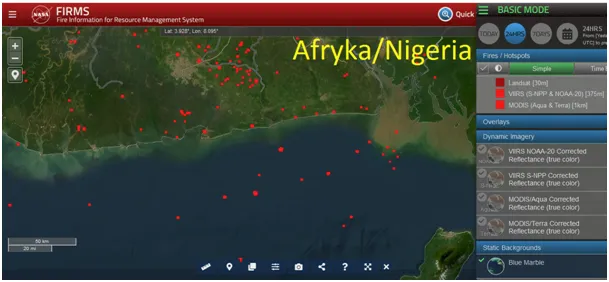
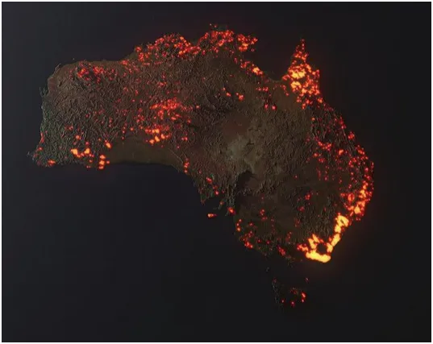
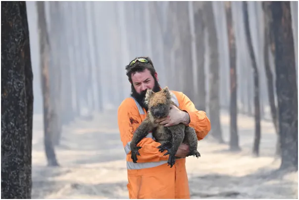
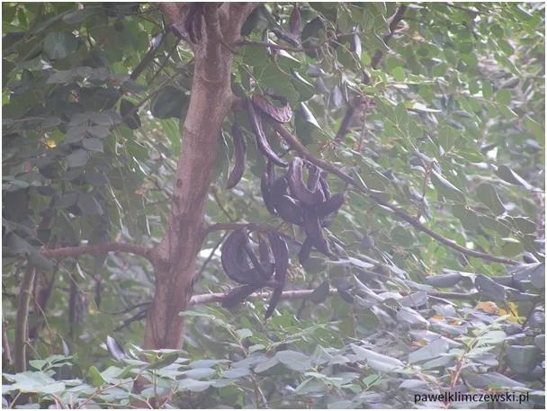
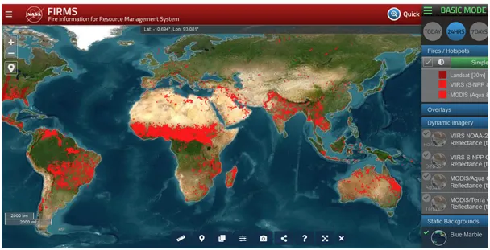

Pożary oceanów
"Astronauta opublikował wizualizację pożarów w Australii", to były tylko ćwiczenia.
To było przed pandemią, uczyłem się wtedy maszyną rozpoznawać obiekty na zdjęciach przy użyciu AI. Byłem pod wrażeniem, gdy maszyna odróżniała słonie afrykańskie od azjatyckich, ale nagle doszedłem do ściany.
Sieć neuronowa googla każdy siwy obrazek z gałęziami drzew rozpoznawał jako "miś koala w płomieniach". Poniżej zdjęcie strąków chleba świętojańskiego z grudniowego lasu w Turcji zostało też tak rozpoznane. Nie przeglądam "mediów" i nie wiedziałem, że "Australia płonie" a dowodem był obrazek płonącego kontynentu, który przygotował jakiś astronauta.

Oczywiście on był wtedy u siebie w domu, i co napisano, wizualizację zrobił na podstawie strony NASA. Autorytety nie do podważenia: anonimowy astronauta i NASA. Wchodzę na tę stronę a tam dziś płonie Afryka, a w mediach cisza. Strona wyraźnie jest opisana "ogień", strach się bać. Numer polega na tym, że są to punktowe źródła ciepła, jak widać, w tym silniki statków na oceanie też oraz wszelkie fabryki, domowe ogniska, grille, ciepłownie, pralnie przy szpitalach i zapewne większe restauracje. Dodatkowo czerwone piksele pokazujące cieplejsze punkty nie zmniejszają się, gdy zwiększamy skalę mapy. Przy wizualizacji całych kontynentów ogródkowy grill, czy pralnia mają rozmiar województwa. Teraz pan astronauta w Photoshopie zamienił czerwone kwadraciki na płomienie a mainstream już zrobił resztę.

Co roku pożary buszu trawią sawanny okołorównikowych terenów, ten ogień jest niezbędny do odrodzenia się traw i wszelkiego tam życia . Niestety, pod naciskiem zielonych terrorystów w Australii zabroniono farmerom zbierać z lasu chrust, aby "ptaszki" miały lepsze schronienie. Po kilku latach tego chrustu było na tyle dużo, że gdy przyszedł pożar płomienie sięgały koron drzew, co zwykle nie ma miejsca i katastrofa gotowa.

Dlaczego sieć neuronowa googla każdy las rozpoznawała jako pożar Australii? Nastąpiło tzw. "przetrenowanie sieci", chodzi o nieproporcjonalną liczbę jednego typu zdjęć w systemie. Zrozumiałem wtedy, że to nie jest tylko chwilowa "moda", lecz ćwiczenia przed czymś większym. Globalne szaleństwo współczucia "płonącym misiom" wypadło doskonale i za chwilę odpalono "pandemię".

Wiemy już, że z ludem przez telefon można zrobić wszystko. Czekamy spokojnie na kolejne odsłony, ale bez specjalnych emocji, luz... Optymalnie bez internetu w telefonie, co gorąco polecam, choćby przez święta.
Paweł Klimczewski